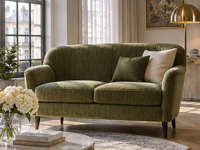
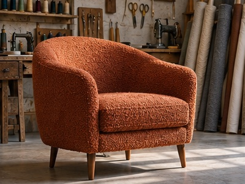
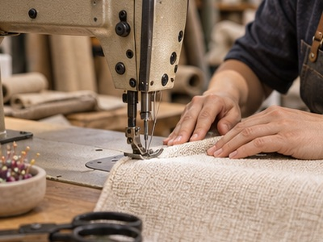
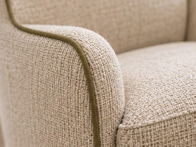
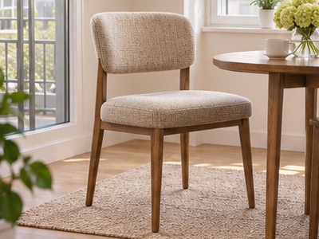

Мебельная мастерская в Митино
Работы и материалы
Три примера обивки и материалов. Откройте фотографии, чтобы рассмотреть фактуру.


Диван в оливковой обивке
Пример спокойного оттенка и мягкой посадки. В оценку можно включить подушки и наполнитель.


Кресло из фактурной ткани
Пример материала с видимой текстурой. На объём работ влияют подлокотники и конструкция спинки.

Образцы тканей
Посмотрите, как разные виды плетения и оттенки воспринимаются рядом.


Работа с обивкой
Обивку раскраивают под форму изделия. На стоимость влияют размеры, швы и количество деталей.


Кант и швы
Уточните, нужно ли сохранить кант и декоративные швы, если хотите повторить исходную отделку.


Стул с новым сиденьем
Для комплекта стульев укажите количество и пришлите снимок одного изделия в сборе.
Фотореалистичные иллюстрации созданы для портфолио.
Оценить по фото
Посмотрите примеры обивки, сравните ткани и узнайте, что влияет на оценку.